Tout ce qu’il faut savoir pour utiliser Rugbeo, écran par écran : que vous soyez joueur, coach, admin ou membre du bureau du club. Lisez-le une première fois du début à la fin, puis gardez-le sous la main : chaque chapitre se lit aussi tout seul.
Adresse de l’appli : simonantoine53-sketch.github.io/Appli-rugby
De la convoc’ au maillot, Rugbeo.
Sommaire
Avant de commencer
Rugbeo en deux minutes · les rôles · comment lire ce guide
Premiers pas
Créer un compte · moins de 15 ans · confirmer l’e-mail · se connecter · mot de passe oublié · rejoindre son club · installer l’appli sur le téléphone
L’accueil
En-tête et navigation · « À faire cette semaine » · tuiles · tutoriel · notifications
L’agenda et les convocations
Répondre · qui vient · créer un événement · planning de la saison · import des matchs FFR · relancer · annuler, modifier
Les stratégies
La bibliothèque · publier · proposer au coach · partager · « Qui a vu » · commentaires
Rugbeo réunit dans une seule appli ce que les clubs gèrent d’habitude avec des groupes WhatsApp, des tableurs et des feuilles papier.
Rugbeo en deux minutes
Page
À quoi elle sert
Accueil
Ce que vous avez à faire cette semaine : répondre à une convocation, regarder une stratégie, découvrir la compo, relancer les joueurs (pour le staff).
Agenda
Les matchs et entraînements de l’équipe. Chaque joueur répond Présent / Peut-être / Absent ; le staff voit qui vient.
Stratégies
Les lancements de jeu et combinaisons dessinés sur un terrain de rugby, animés étape par étape. Le coach sait qui les a regardés.
Compos
La feuille de match : composée à partir des présents, imprimable, partageable en image, publiée aux joueurs.
Équipe
Les membres, les invitations, les réglages de l’équipe et l’onglet Club (toutes les équipes, le bureau).
Compte
Votre profil, les notifications, l’aide, la confidentialité, la déconnexion.
Club, équipes et rôles
Un club (par exemple « RC Démo ») contient autant d’équipes que vous voulez : Séniors, réserve, U19, féminines… Chaque personne rejoint le club, puis une ou plusieurs équipes. Dans chaque équipe, elle a un rôle :
Rôle
En résumé
Joueur
Est convoqué aux matchs et entraînements, regarde les stratégies, voit la compo publiée, peut proposer un dessin au coach.
Coach
Crée les événements, publie les stratégies, fait les compos, gère les membres et les réglages de l’équipe.
Admin
Aide le coach pour l’organisation : agenda, compos, membres, réglages. Il ne publie pas les stratégies lui-même : il les propose au coach.
Bureau du club
Président(e), vice-président(e), secrétaire, trésorier(ère), membre du bureau : gère toutes les équipes du club avec les droits d’un coach, crée les équipes, nomme le bureau.
Le coach et l’admin forment le staff de l’équipe. Un coach ou un admin qui joue aussi peut cocher Joue aussi : il est alors convoqué comme un joueur. Le tableau complet est au chapitre 11.
Comment lire ce guide
Les noms de boutons et d’onglets sont écrits en gras, exactement comme dans l’appli.
Les encadrés gris « Qui ? » indiquent pour quel rôle la fonction existe.
Les encadrés bleus sont des astuces ; les encadrés orange, des points d’attention.
Les captures viennent d’un club de démonstration fictif (« RC Démo ») : aucun vrai joueur n’y figure.
Sur téléphone ou sur ordinateur ?Les deux. Sur téléphone, la navigation est en bas de l’écran ; sur ordinateur, elle est en haut. L’éditeur de stratégies est plus confortable sur ordinateur ou tablette, mais il fonctionne aussi sur téléphone.
2Premiers pas
Pour rejoindre votre club, il vous faut trois choses : un compte, l’e-mail de confirmation et le code d’invitation donné par votre coach ou votre club.
Créer un compte
Ouvrez simonantoine53-sketch.github.io/Appli-rugby et touchez Créer un compte gratuit (ou Se connecter en haut à droite, puis l’onglet Inscription).
Remplissez Prénom / pseudo, E-mail et Mot de passe (6 caractères minimum). Une jauge vous indique si le mot de passe est trop court, faible, moyen ou Solide ✓.
Dans Votre âge, laissez J’ai 15 ans ou plus, ou choisissez J’ai moins de 15 ans (voir ci-dessous).
Touchez Créer mon compte. En créant un compte, vous acceptez les conditions d’utilisation et la politique de confidentialité (liens sous le formulaire).
Gratuit, sans publicité.Votre compte garde vos dessins sur tous vos appareils et vous relie à votre équipe.
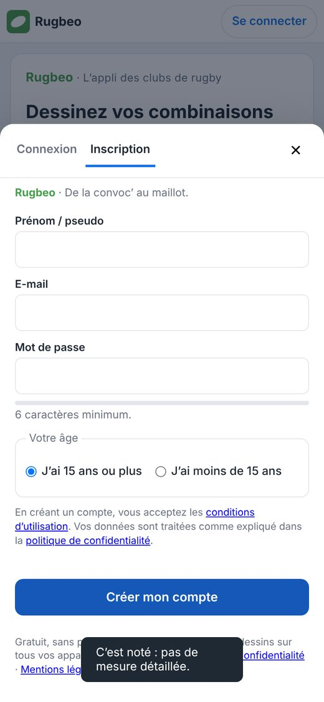
Fenêtre d’inscription
Moins de 15 ans : l’accord d’un parent
Avant 15 ans, la loi demande l’accord d’un parent pour créer un compte. Si vous choisissez J’ai moins de 15 ans, deux éléments apparaissent :
E-mail d’un parent : il doit être différent de celui du jeune ;
une case à cocher : « Un de mes parents (ou mon représentant légal) a lu la politique de confidentialité et est d’accord pour que je crée ce compte. »
Le plus simple : le jeune montre l’écran à son parent, avec la page Confidentialité, puis coche la case ensemble. L’accord est enregistré avec le compte.
Pour les clubs de jeunesLes coachs n’ont rien à faire de plus : l’accord est demandé au moment de l’inscription.
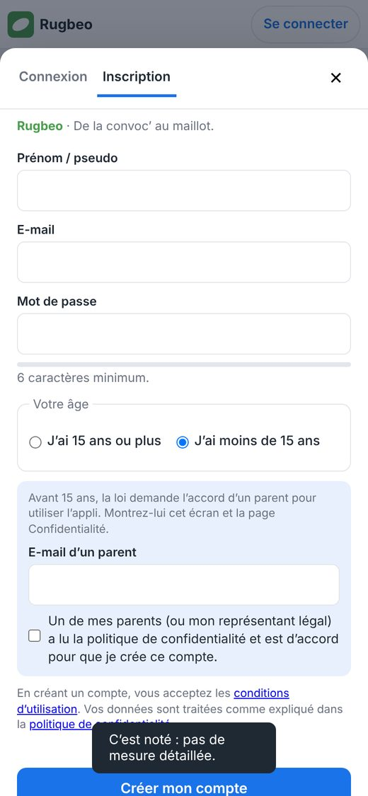
Accord parental
Confirmer votre e-mail
Après l’inscription, l’écran « Vérifiez votre boîte mail » s’affiche : un e-mail de confirmation vient d’être envoyé.
Ouvrez l’e-mail et cliquez sur le lien. Vous êtes connecté automatiquement, même si vous l’ouvrez sur un autre appareil (par exemple l’e-mail sur l’ordinateur, l’appli sur le téléphone).
Pas d’e-mail ? Regardez dans les spams. Le bouton Renvoyer l’e-mail en envoie un nouveau (une fois par minute au plus).
Une faute dans l’adresse ? Changer d’adresse e-mail vous ramène à l’inscription.
24 heures pour confirmerSans confirmation sous 24 h, l’inscription est annulée et l’adresse peut être réutilisée. Si le lien a expiré ou a déjà servi, connectez-vous : l’appli vous proposera un nouveau lien.
Se connecter, mot de passe oublié
Se connecter : onglet Connexion, e-mail et mot de passe, puis Se connecter.
Mot de passe oublié : touchez Mot de passe oublié ?, vérifiez votre e-mail puis Recevoir le lien. Le lien reçu ouvre l’appli sur Nouveau mot de passe : choisissez-en un (différent de l’ancien) et touchez Enregistrer le mot de passe. Vous êtes ensuite connecté.
Message « Cet e-mail a déjà un compte » à l’inscription ? La fenêtre passe d’elle-même en connexion : vous avez déjà un compte.
Trop d’essais : l’appli vous demande de patienter quelques minutes. C’est une protection normale.
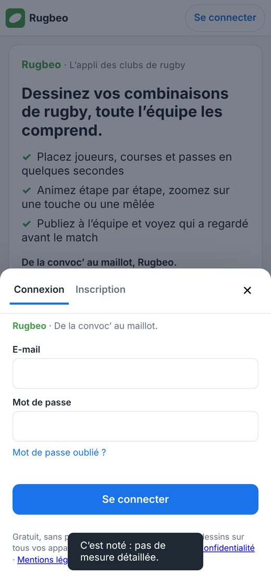
Connexion
Rejoindre votre club et vos équipes
Une fois connecté sans équipe, l’accueil affiche « Dernière étape : rejoignez votre club ». Votre coach ou votre club vous a donné un code d’invitation (6 à 8 caractères). Il en existe deux sortes :
Code
Ce qui se passe
Code d’équipe (ex. SENIOR26)
Vous demandez directement à rejoindre cette équipe. Message : « Demande envoyée à “Séniors”. Un coach ou le bureau du club doit la valider. »
Code du club (ex. RCDEMO26)
Vous entrez dans le club (« Bienvenue au club ! »), puis vous choisissez vos équipes dans la fenêtre Rejoindre vos équipes.
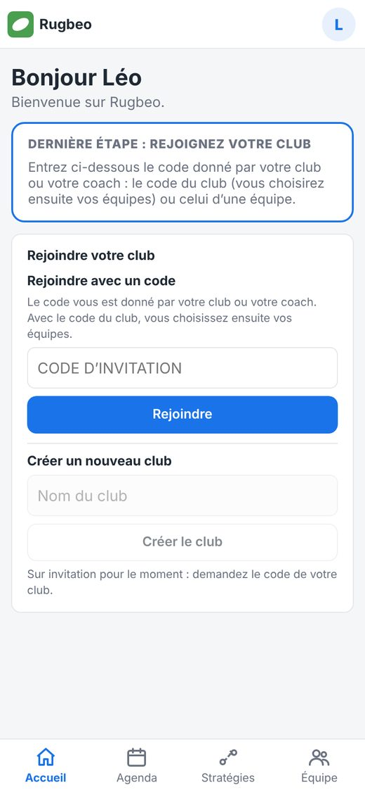
« Rejoignez votre club »
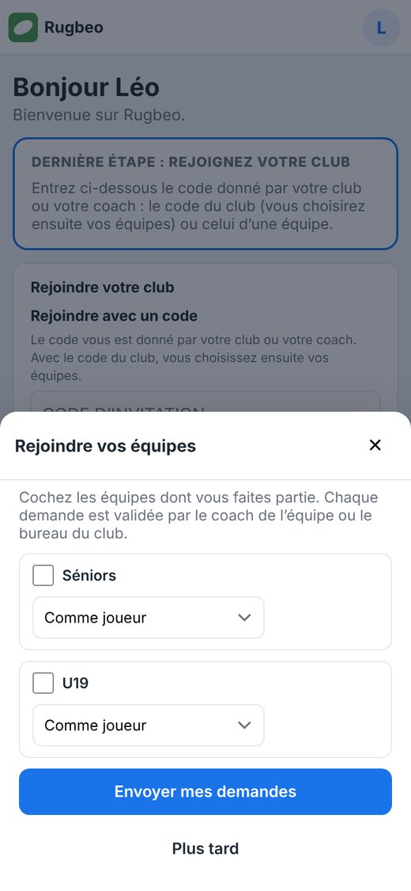
Choisir ses équipes
Tapez le code dans Code d’invitation puis touchez Rejoindre.
Avec un code de club : cochez vos équipes et, pour chacune, choisissez Comme joueur ou Comme coach / encadrant.
Touchez Envoyer mes demandes (ou Plus tard).
Le coach ou le bureau valide votre demande. Vous recevez une notification « Bienvenue » et l’équipe apparaît.
Pendant l’attente, l’accueil affiche « Demande envoyée à … : en attente de validation ».
Code invalide ?Vérifiez-le auprès de votre club : un coach a peut-être généré un nouveau code, l’ancien ne marche alors plus.
Créer un club (premier coach du club)
Si votre club n’est pas encore sur Rugbeo : Compte → Rejoindre ou créer un club, une équipe → Créer un nouveau club. Indiquez le nom du club, puis le nom de la première équipe (« Séniors » par défaut). Vous serez au bureau du club et coach de cette première équipe.
Sur invitation pour le momentSi le bouton est grisé, la création de clubs est fermée : demandez le code de votre club, ou contactez l’éditeur de l’appli.
Installer l’appli sur le téléphone
Rugbeo s’ouvre dans le navigateur, sans passer par un store. Pour l’avoir comme une vraie appli (icône, plein écran, notifications) :
Téléphone
Marche à suivre
iPhone
Ouvrez l’adresse dans Safari, touchez Partager (carré avec une flèche) → « Sur l’écran d’accueil ». Ouvrez ensuite Rugbeo depuis l’icône. Indispensable sur iPhone pour recevoir les notifications.
Android
Dans Chrome, menu ⋮ → « Ajouter à l’écran d’accueil » ou « Installer l’application ». Les notifications fonctionnent aussi sans installation.
Toujours à jourL’appli se met à jour toute seule : quand une nouvelle version sort, elle se recharge discrètement (jamais pendant que vous dessinez ou qu’une fenêtre est ouverte). Rien à télécharger.
3L’accueil
L’accueil est votre point de départ : il vous dit ce qu’il reste à faire, et vous permet souvent de le faire sans changer de page.
L’en-tête et la navigation
En haut à gauche : le logo de l’équipe (s’il a été ajouté) et le nom de l’équipe. Si vous êtes dans plusieurs équipes, c’est une liste Changer d’équipe. Toucher le logo ramène à l’accueil.
Les onglets : Accueil, Agenda, Stratégies, Compos, Équipe. Sur téléphone, ils sont dans la barre du bas.
Les pastilles rouges : convocations sans réponse (Agenda), stratégies à regarder (Stratégies), demandes d’adhésion à valider (Équipe, pour le staff).
« + Nouveau dessin » : ouvre l’éditeur (staff, et sur la page Stratégies).
En haut à droite : votre photo ou votre initiale, qui ouvre la page Compte.
L’onglet Compos n’apparaît pas ?Pour un joueur, il reste caché tant qu’aucune compo n’a été publiée par le staff.
Accueil joueur
Sous « Bonjour {prénom} », le bloc À faire cette semaine liste au plus trois actions (puis « Voir N autres tâches ») :
Convocations sans réponse : « Match sam. 24 oct. à 15h00 : serez-vous là ? », avec Présent, Peut-être, Absent. Un appui suffit : « Réponse envoyée ».
Stratégies à regarder : Regarder ouvre l’animation.
Compo publiée pour un match proche : « Compo publiée : vous êtes n°12 », bouton Voir.
Profil incomplet : « Complétez votre profil : photo et poste ».
Notifications pas encore activées : bouton Activer.
Quand tout est fait : « Rien d’urgent. ✓ Vous êtes à jour. »
Dessous, des tuiles mènent aux pages : Stratégies (« N à regarder »), Équipe, Agenda (prochain rendez-vous), Compos (si une compo est publiée).
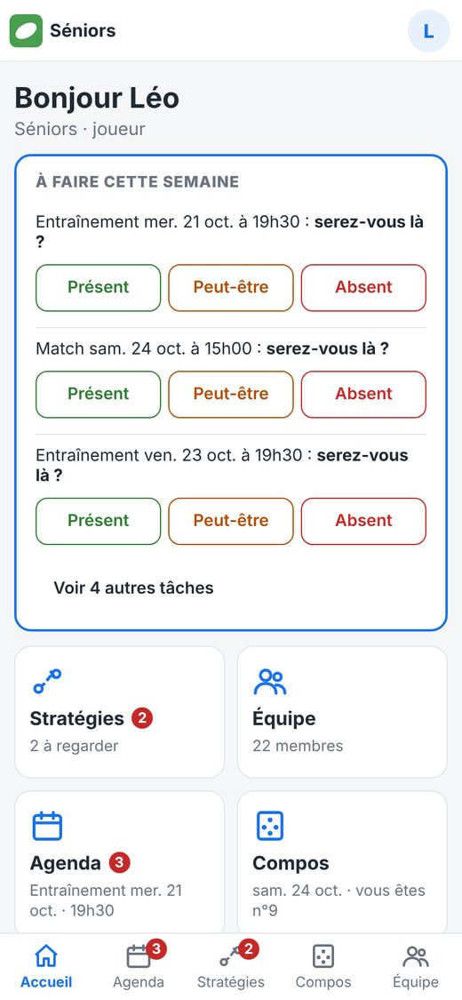
Accueil d’un joueur
Accueil coach (et staff)
Démarrer avec votre équipe (au début seulement) : une liste de 5 étapes avec barre de progression : créer l’équipe, inviter vos joueurs (x/5), publier votre première stratégie, créer votre premier match ou entraînement, activer les notifications (ou installer l’appli sur iPhone). Le bloc disparaît quand tout est fait.
À faire cette semaine, dans cet ordre :
vos propres convocations, si vous jouez aussi ;
un événement dans les 7 jours avec des joueurs sans réponse : Relancer ;
des demandes pour rejoindre l’équipe : Valider ;
des propositions de joueurs à regarder : Voir (coach) ;
une stratégie récente vue par moins de 70 % de l’équipe : « x/y ont vu », Relancer ;
un match dans les 7 jours sans compo publiée : Composer ou Finir ;
aucun événement prévu : Créer.
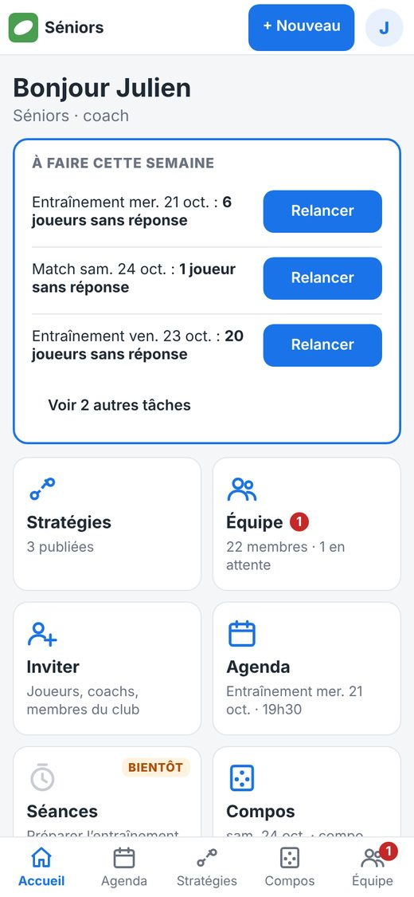
Accueil d’un coach
Tuiles du staff : Stratégies (N publiées), Équipe (membres et demandes en attente), Inviter, Agenda (prochain rendez-vous), Compos (« compo à faire », « brouillon »…) et Séances (badge « Bientôt » : touchez Ça m’intéresse pour voter pour cette future fonction).
Le tutoriel (visite guidée)
À votre première arrivée sur l’accueil, une visite guidée vous montre chaque zone : 12 étapes pour un coach, 8 pour un joueur. Boutons Suivant, Précédent, Passer, puis C’est parti !. Au clavier : flèches pour avancer, Échap pour quitter.
Pour la revoir : Compte → Revoir le tutoriel.
Activer les notifications
Après la visite, l’appli propose « Activer les notifications ? » (au plus une fois par semaine). Touchez Activer les notifications puis acceptez la demande du téléphone. Vous serez prévenu des convocations, des relances avant le match, des compos et des nouvelles stratégies.
Sur iPhoneLa fenêtre s’appelle « Restez informé » : installez d’abord l’appli sur l’écran d’accueil (chapitre 2), ouvrez-la depuis l’icône, puis activez les notifications dans Compte.
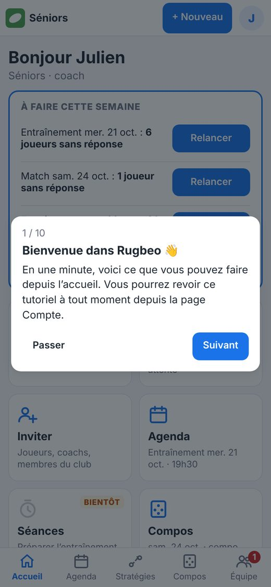
Première étape du tutoriel
4L’agenda et les convocations
Tous les matchs, entraînements et rendez-vous de l’équipe. Les joueurs y répondent ; le staff y voit qui vient et relance ceux qui n’ont pas répondu.
La liste des événements
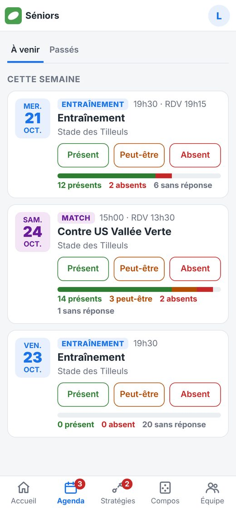
Agenda d’un joueur
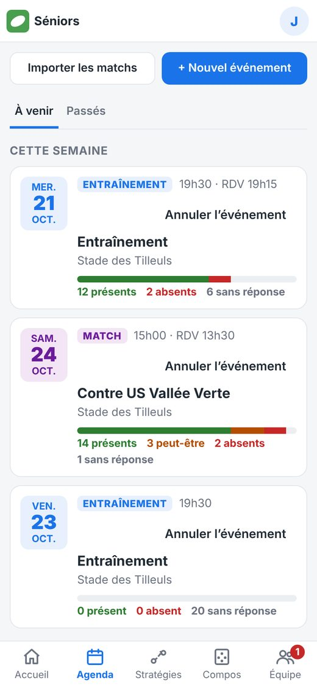
Agenda du staff
Deux onglets : À venir et Passés. Un événement reste « à venir » jusqu’à 3 h après son début.
Les événements sont groupés par semaine : « Cette semaine », « La semaine prochaine »…
Chaque carte indique le type (Match, Entraînement ou Rendez-vous), la date, l’heure, l’heure de RDV, le lieu, et « Contre {adversaire} » (domicile) ou « À {adversaire} » (extérieur).
La barre de présence (présents, peut-être, absents, sans réponse) est visible par tout le monde.
Si vous êtes convoqué, les boutons de réponse sont directement sur la carte.
Staff : boutons Importer les matchs et + Nouvel événement en haut.
Répondre à une convocation
Touchez un événement pour ouvrir sa fiche : date, heure, « Rendez-vous à … », lieu (un appui l’ouvre dans Google Maps) et les infos pour l’équipe.
Dans Votre réponse, touchez Présent, Peut-être ou Absent. C’est enregistré tout de suite.
Ajoutez si besoin un commentaire (« retard, blessure… », 140 caractères) : il s’enregistre tout seul (« Enregistré ✓ ») et le staff le voit.
Pour changer d’avis, touchez une autre réponse. Toucher à nouveau la réponse active la retire.
Vous pouvez répondre jusqu’à 3 h après le début de l’événement.
Ajouter à mon agenda télécharge l’événement pour l’agenda de votre téléphone (il commence à l’heure du rendez-vous). Pour un match, Voir la compo mène à la feuille de match publiée.
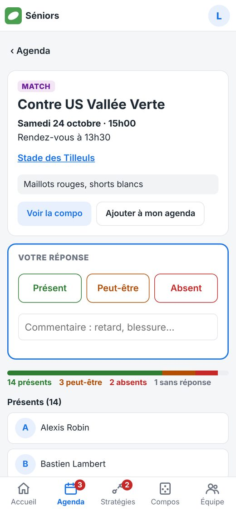
Fiche d’un match côté joueur
Qui est convoqué ?Tous les membres de l’équipe avec le rôle Joueur, plus les coachs et admins qui ont coché « Joue aussi ». Les compteurs ne comptent que les convoqués.
Qui vient (staff)
Sur la fiche, le staff voit les groupes Présents, Peut-être, Absents, Sans réponse, et Staff non convoqué. Les commentaires des joueurs s’affichent entre guillemets.
Répondre à la place d’un joueur (il vous a prévenu par SMS, par exemple) : la petite liste à droite de son nom. Sa réponse porte alors la mention « saisi par le staff ».
Relancer les N joueurs sans réponse : envoie une notification à ceux qui n’ont pas répondu. L’appli vous dit sur combien de téléphones elle est arrivée.
Copier pour WhatsApp : copie un message tout prêt avec la liste des joueurs sans réponse, à coller dans le groupe de l’équipe (utile pour ceux qui n’ont pas activé les notifications).
Boutons Modifier, Annuler l’événement et Supprimer. Pour un match : Feuille de match.
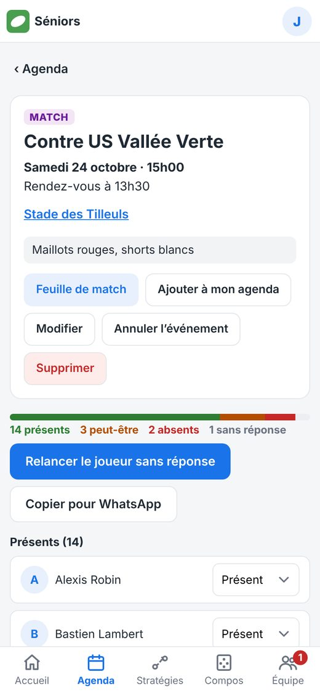
Fiche d’un match côté staff
Créer un événement
+ Nouvel événement ouvre le formulaire :
Le type : Entraînement (par défaut), Match ou Autre (réunion, repas d’équipe, tournoi…).
Pour un match : Adversaire (obligatoire) et À domicile / À l’extérieur. Sinon : un Titre.
Date et Début (obligatoires), Rendez-vous (heure d’arrivée, facultative, avant le début).
Lieu : le dernier lieu utilisé est proposé.
Infos pour l’équipe : tenue, matériel, covoiturage…
Laissez cochée Prévenir l’équipe par notification pour envoyer la convocation.
Enregistrer.
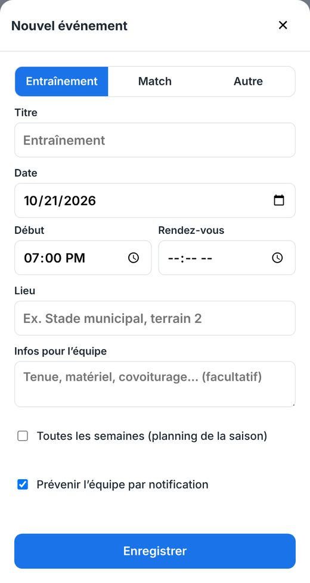
Nouvel événement
Programmer les entraînements de toute la saison
Pour un entraînement, à la création, cochez Toutes les semaines (planning de la saison) :
Cochez les jours d’entraînement (Lun à Dim), par exemple mercredi et vendredi.
Jusqu’au : par défaut le 30 juin, fin de saison.
L’appli affiche le récapitulatif : « 73 entraînements : chaque mercredi et vendredi à 19h00, jusqu’au 30 juin ».
Enregistrer : toutes les séances sont créées d’un coup (150 au maximum). Une seule notification est envoyée pour tout le planning.
Vacances, terrain gelé ?Ouvrez la séance concernée et annulez-la : l’appli vous propose « Seulement le … » ou « Celle-ci et les N suivantes ». Même choix pour la suppression. En modification, la case « Appliquer aussi aux séances suivantes de ce planning » reporte le titre, le lieu, les notes et les horaires (chaque séance garde sa date).
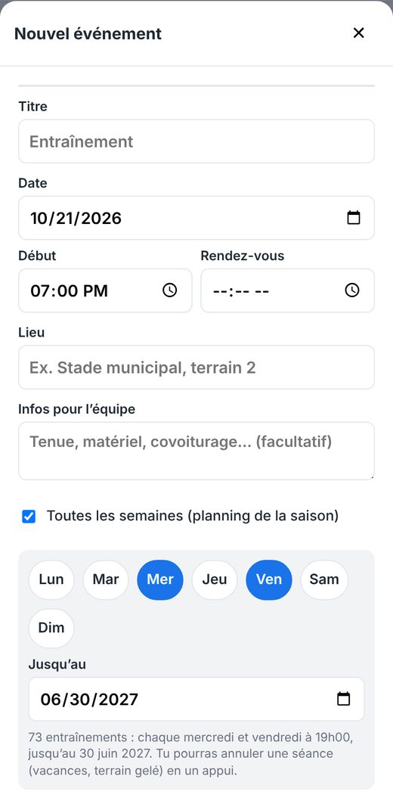
Planning de la saison
Importer les matchs depuis la fédération (FFR)
Plutôt que de saisir les matchs un par un, récupérez le calendrier de votre poule :
Dans Mon Club House, ouvrez la page de la compétition → Calendrier → « Ajouter à mon agenda ». Votre appareil télécharge un fichier .ics.
Dans Rugbeo : Agenda → Importer les matchs → Choisir le fichier .ics.
Choisissez votre club dans ce calendrier (l’appli le devine, puis le mémorise) et l’heure de rendez-vous : aucune, 45 min, 1 h (par défaut), 1 h 30 ou 2 h avant le coup d’envoi.
Vérifiez l’aperçu (« Nouveau », « Modifié », « À jour ») et touchez Importer N matchs.
Seuls les matchs à venir sont repris ; les journées « Exempt » sont ignorées. Les notes de chaque match contiennent la compétition et le lien vers la fiche du match.
Un match a été déplacé ?Réimportez le même fichier : les matchs modifiés sont mis à jour, sans doublon. Tout autre fichier .ics (ligue, comité) fonctionne aussi.
Pas de notification à l’importL’import ne prévient pas les joueurs : annoncez-le dans le groupe de l’équipe, ou relancez match par match.
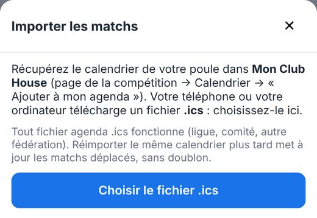
Importer les matchs
Annuler, rétablir, modifier, supprimer
Action
Effet
Annuler l’événement
L’événement reste visible avec la mention « Annulé ». Les membres sont prévenus par notification (événement isolé).
Rétablir l’événement
Annule l’annulation.
Modifier
Rouvre le formulaire. Message : « Événement modifié ».
Supprimer
Efface définitivement l’événement et toutes les réponses.
5Les stratégies
La bibliothèque de l’équipe : vos dessins, ceux publiés par le coach, et les propositions des joueurs.
Les onglets de la page
Onglet
Contenu
Mes dessins
Les dessins que vous avez enregistrés (privés tant que vous ne les publiez ou ne les proposez pas).
De l’équipe
Les stratégies publiées dans l’équipe. La pastille indique les nouveautés que vous n’avez pas encore vues.
Propositions
Coach seulement : les dessins proposés par les joueurs, et les copies envoyées par d’autres équipes du club.
Sur cet appareil
N’apparaît que s’il reste d’anciens dessins faits sans compte. Envoyer dans mon compte les récupère.
Le champ Rechercher un dessin… cherche dans le titre, la catégorie et les mots-clés ; les puces filtrent par catégorie (Attaque, Défense, Touche, Mêlée, Jeu au pied, Physique, Entraînement, Match, Autre).
Côté joueur : regarder les stratégies
Dans De l’équipe, touchez la miniature ou le titre : l’aperçu animé démarre tout seul. Le coach voit que vous l’avez regardée.
Sur chaque carte : le badge Publié, la catégorie, l’auteur, le nombre d’étapes, et le bouton 💬 pour les commentaires.
Si la carte porte « Dans l’appli seulement », le coach a réservé la stratégie à l’appli : vous pouvez la regarder, mais pas la télécharger ni la copier.
Proposer un dessin au coach
Une idée de combinaison ? Dessinez-la (chapitre 6), enregistrez-la, puis sur sa carte dans Mes dessins touchez Proposer au coach. Le coach est prévenu et la retrouve dans ses Propositions. Vous pouvez l’Annuler la proposition depuis le menu ⋯.
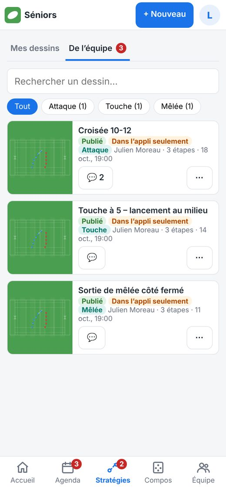
Stratégies de l’équipe (joueur)
Côté coach : la carte d’une stratégie
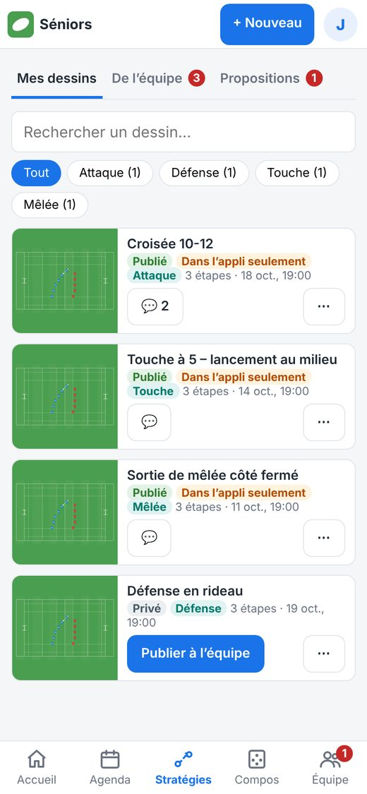
Mes dessins (coach)
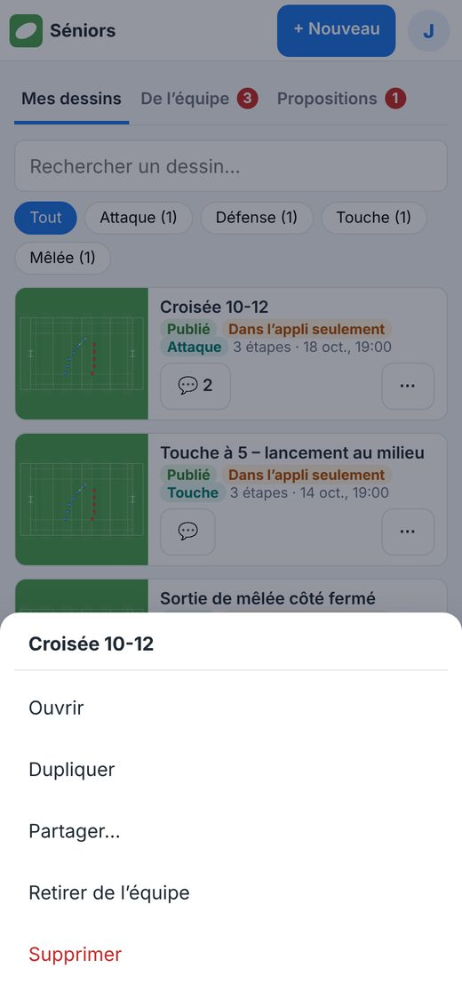
Le menu ⋯
Badges : Privé, Proposé au coach ou Publié ; le mode de partage (Dans l’appli seulement, Téléchargeable) ; la catégorie.
Boutons :
Publier à l’équipe : toute l’équipe la voit et reçoit une notification ;
Une proposition de joueur se publie avec Publier la proposition, après l’avoir ouverte et retouchée si besoin.
Partager une stratégie
Menu ⋯ → Partager… ouvre la fenêtre de partage :
Envoyer une copie à : une puce par autre équipe du club. L’équipe reçoit la copie dans ses Propositions et peut la modifier ; votre original ne change pas.
Téléchargement (interrupteur) : les joueurs peuvent télécharger la stratégie (image, vidéo, PDF) et la copier.
Lien public (interrupteur) : n’importe qui avec le lien la voit, même sans compte. Il faut d’abord autoriser le téléchargement. Copier le lien le copie.
Interrupteurs
Mode affiché
aucun
Dans l’appli seulement
Téléchargement
Téléchargeable
Téléchargement + Lien public
Partage libre
Couper le lien public le rend aussitôt inutilisable. Le lien et le téléchargement ne concernent que les stratégies publiées.
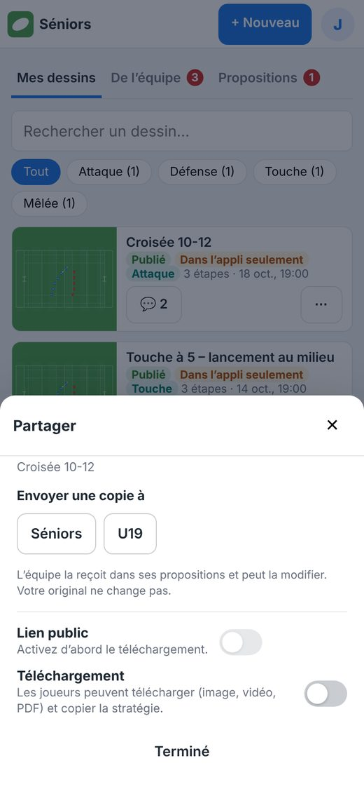
Fenêtre Partager
Le lien publicLa personne qui l’ouvre voit l’animation (Précédente, Lire, Suivante, Plein écran) sans compte, sans pouvoir modifier ni télécharger. Pratique pour un parent, un joueur pas encore inscrit, un autre club.
« Qui a vu » et commentaires
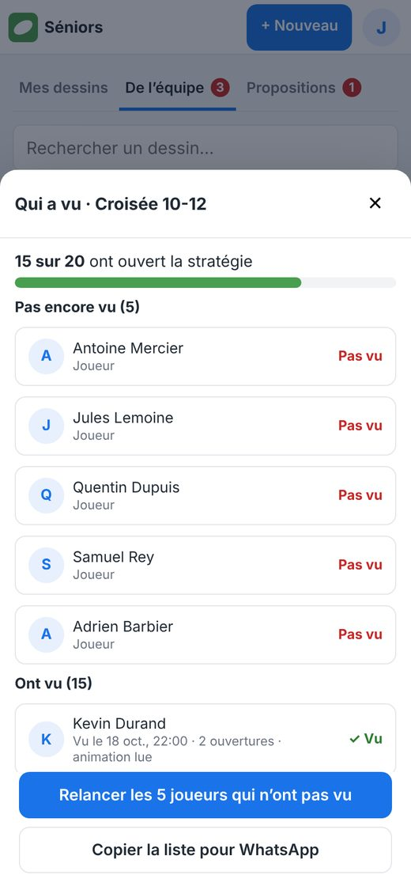
Qui a vu
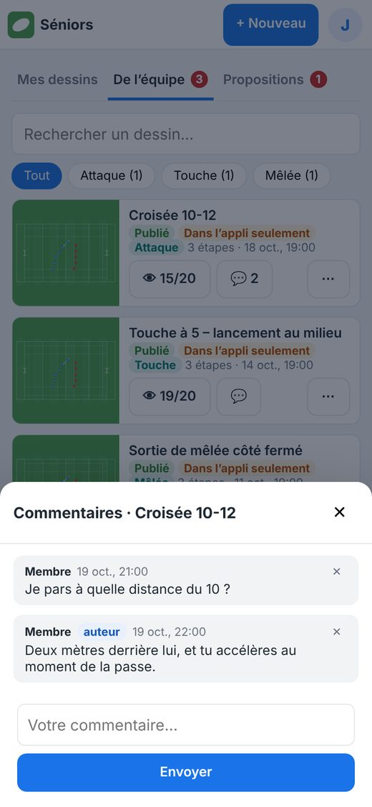
Commentaires
Qui a vu (staff) : « X sur Y ont ouvert la stratégie », puis deux listes :
Pas encore vu ;
Ont vu, avec la date, le nombre d’ouvertures et « animation lue ».
Relancer les N joueurs qui n’ont pas vu leur envoie une notification ; Copier la liste pour WhatsApp prépare un message « À regarder avant le match ».
Commentaires : chacun peut poser une question ou faire une remarque sous une stratégie publiée (1000 caractères). L’auteur est marqué « auteur ». Vous pouvez supprimer vos commentaires ; le staff peut supprimer tous ceux de l’équipe.
6L’éditeur de stratégies
Placez les joueurs, tracez les courses et les passes, découpez le mouvement en étapes : l’appli anime le tout.
L’écran de l’éditeur
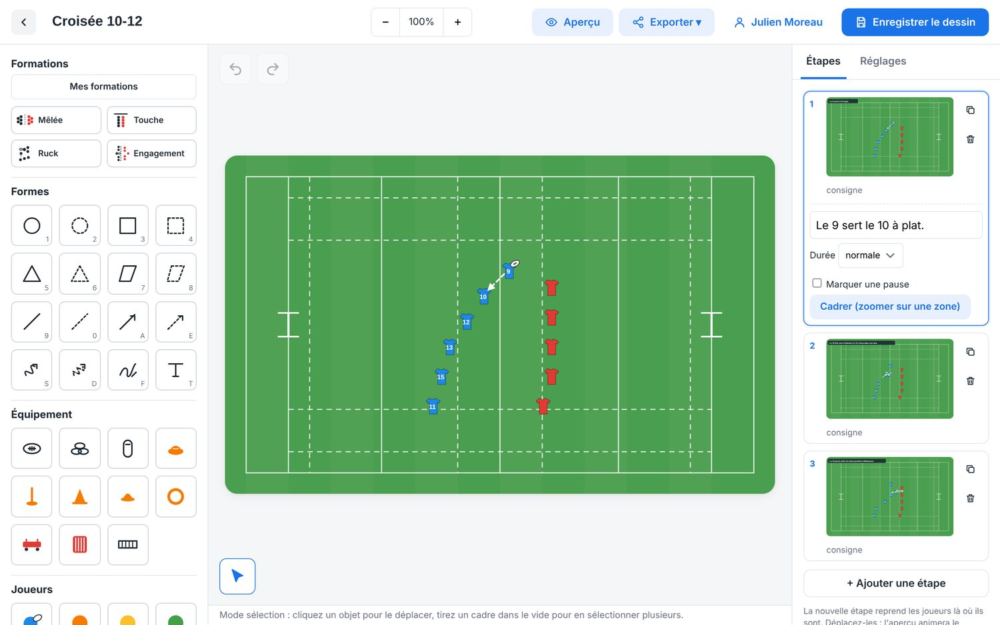
L’éditeur sur ordinateur : outils à gauche, terrain au centre, étapes et réglages à droite
Barre du haut : flèche retour, titre (touchez-le pour renommer), zoom (de 50 % à 400 %), Aperçu, Exporter ▾, votre compte et Enregistrer le dessin.
À gauche : les outils (formations, formes, équipement, joueurs).
Au centre : le terrain, avec Annuler / Rétablir en haut et le bouton de sélection en bas.
À droite : les onglets Étapes et Réglages.
Sur téléphone : barre du bas Accueil, Outils, Étapes, Réglages, Compte. Zoomez en pinçant à deux doigts.
La barre d’aide sous le terrain explique toujours quoi faire avec l’outil choisi : « Choisissez un outil à gauche, puis cliquez ou glissez sur le terrain. »
Les outils
Formations (placement en un appui)
Mêlée, Touche, Ruck, Engagement placent 15 contre 15 joueurs d’un coup (voir page suivante). Mes formations rappelle vos placements enregistrés.
Formes (raccourci clavier)
Cercle, cercle pointillé
12
Rectangle, rectangle pointillé
34
Triangle, triangle pointillé
56
Quadrilatère, quadrilatère pointillé
78
Ligne, ligne pointillée
90
Flèche (passe / déplacement)
A
Flèche pointillée (passe)
E
Course avec ballon (ondulée)
S
Course en appuis (zigzag)
D
Tracé libre
F
Texte (80 caractères)
T
Équipement
Ballon, ballons, sac de plaquage, plot, piquet, cône, coupelle, cerceau, joug, bouclier, échelle : idéal pour dessiner un atelier d’entraînement.
Joueurs
Joueur rond ou maillot, en 8 couleurs (orange, jaune, vert, rouge, bleu, violet, noir, gris), et joueur avec ballon (B, dernière couleur choisie).
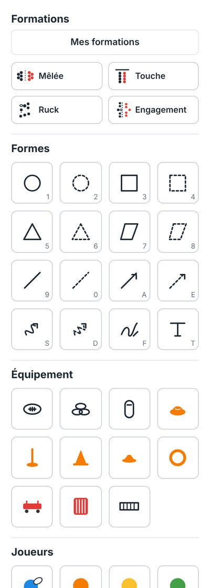
Panneau des outils
Placer une formation
Touchez Mêlée, Touche, Ruck ou Engagement.
Choisissez les couleurs des Attaquants et des Défenseurs (pour l’engagement : équipe qui engage / qui reçoit).
Choisissez le sens de l’attaque : Vers la droite → ou ← Vers la gauche.
Options : Numéros des joueurs, Ballon ; touche À 4, À 5 ou Complète (7) ; ruck : Ajouter la défense.
Placer sur le terrain, puis touchez le terrain à l’endroit voulu : les 30 joueurs se placent d’un coup. L’engagement se place directement au centre.
Déplacez ensuite les joueurs comme vous voulez.
Mes formations
Vous refaites souvent le même alignement ? Placez-le, puis Mes formations → Enregistrer la formation actuelle et donnez-lui un nom (« Touche à 5 attaque »). Ensuite, Placer le remet d’un appui. Les formations sont partagées dans l’équipe.
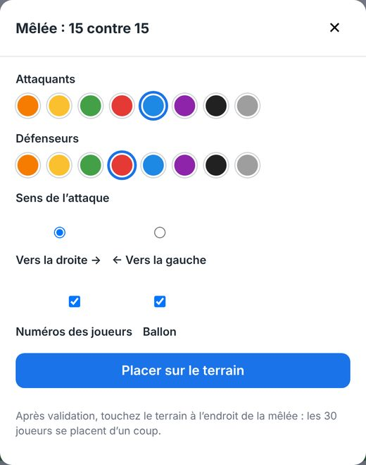
Options de la mêlée
Dessiner et modifier un objet
Choisissez un outil, puis touchez le terrain (joueur, équipement, texte) ou glissez (formes, lignes, flèches). Pour revenir à la sélection : le bouton flèche en bas à gauche, ou V / Échap.
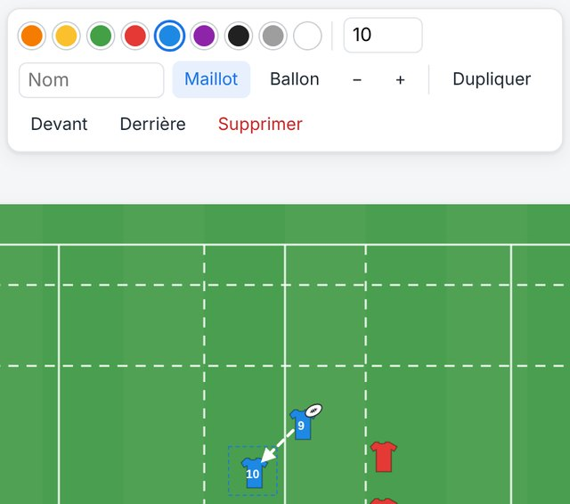
Propriétés d’un joueur sélectionné (le n°10)
Quand un objet est sélectionné, une barre de propriétés apparaît au-dessus du terrain :
Objet
Réglages possibles
Tous
Couleur (9 pastilles, dont le blanc, sauf l’équipement), Dupliquer, Devant, Derrière, Supprimer.
Joueur
N° (3 caractères), Nom (suggestions tirées des membres de l’équipe), Maillot, Ballon (ce joueur porte le ballon), taille − / +.
Formes
Pointillé, Épais, Rempli.
Lignes et flèches
Pointillé, Épais, Flèche, style Droite / Ondulée / Zigzag. Tirez la poignée du milieu pour courber la ligne ; Redresser l’annule.
Flèches du clavier : déplacer (avec Maj : plus vite). Maj + glisser : déplacement horizontal ou vertical seulement ; pour une ligne, angle à 0°, 45° ou 90°.
Les étapes : animer le mouvement
Une stratégie se découpe en étapes : l’appli anime le passage de l’une à l’autre.
Placez les joueurs pour l’étape 1 (le lancement).
Touchez + Ajouter une étape : la nouvelle étape reprend les joueurs là où ils sont.
Déplacez les joueurs et le ballon à leur position suivante. L’aperçu animera le trajet.
Recommencez jusqu’à la fin de l’action.
Pour l’étape sélectionnée :
Consigne (90 caractères) : « Le 9 sert le 10 à plat. » Elle s’affiche dans l’aperçu et les exports.
Durée : normale, 0,5 s, 1 s, 2 s, 3 s ou 5 s.
Marquer une pause : l’animation s’arrête sur cette étape jusqu’à ce qu’on appuie sur Lire. Pratique pour expliquer en vidéo.
Cadrer (zoomer sur une zone) : voir ci-dessous.
Chaque étape peut être dupliquée ou supprimée (icônes à droite de la miniature).
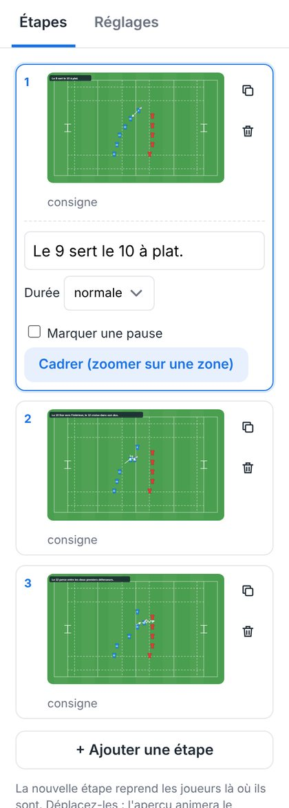
Onglet Étapes
Cadrer : zoomer sur une touche ou une mêléeTouchez Cadrer (zoomer sur une zone), glissez le cadre sur la zone à montrer et tirez un coin pour zoomer, puis Valider le cadrage (ou Entrée). L’aperçu et les exports zoomeront sur cette zone pendant l’étape. Tout le terrain revient à la vue complète.
Les réglages du dessin
Terrain : Complet, Demi ou Vide ; Paysage ou Portrait. Un nouveau dessin sur un téléphone tenu droit démarre en Portrait.
Classement : la catégorie (Attaque, Défense, Touche…) et des mots-clés (« U16, côté fermé ») pour la retrouver par la recherche.
Animation : le temps passé sur chaque étape dans l’aperçu et les vidéos (de 0,4 à 3 s, 1,2 s par défaut).
Aimanter aux lignes : les joueurs s’accrochent aux lignes du terrain (grille de 2,5 m).
Fichier du dessin : Télécharger le dessin (fichier .json) ou Ouvrir un fichier.
Raccourcis clavier : la liste complète.
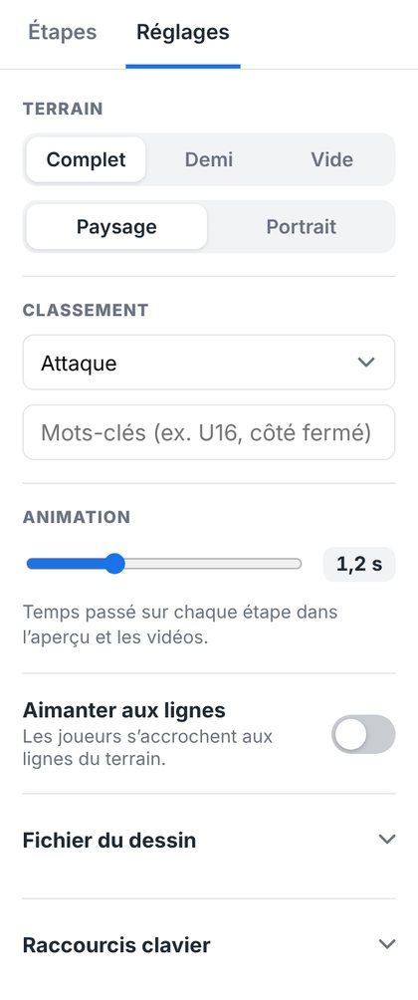
Onglet Réglages
L’aperçu animé
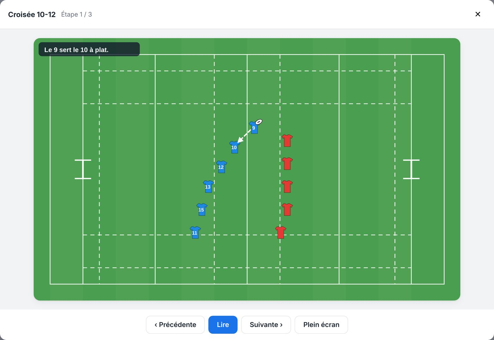
Aperçu : la consigne de l’étape s’affiche en haut à gauche
Aperçu joue l’animation : boutons ‹ Précédente, Lire / Pause, Suivante ›, Plein écran. Au clavier : → ou Espace (suivante), ← (précédente), P lecture/pause, F plein écran, Échap pour sortir. En plein écran, cliquer sur le terrain passe à l’étape suivante : idéal pour présenter à la vidéo du club. Il faut au moins deux étapes pour animer.
Exporter
Exporter ▾ propose quatre formats :
Format
Pour quoi faire
Image
L’étape affichée, en haute résolution (PNG).
GIF animé
L’animation complète, à envoyer sur WhatsApp ou par mail.
Vidéo
Toutes les étapes en vidéo HD, lisible sur iPhone et Android.
Fiche à imprimer (PDF)
Toutes les étapes sur une page, à distribuer aux joueurs. Une fenêtre s’ouvre avec Imprimer / enregistrer en PDF (autorisez les fenêtres surgissantes).
Le GIF et la vidéo demandent au moins deux étapes.
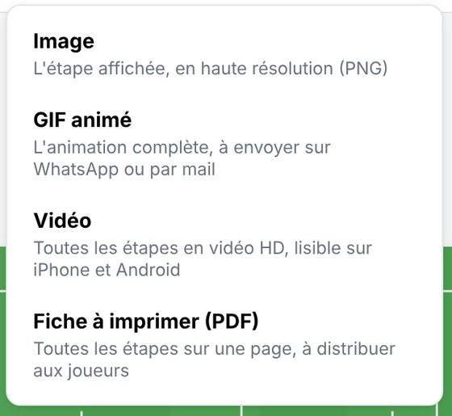
Menu Exporter
Conditions pour exporterIl faut être connecté et membre d’un club. Un joueur ne peut pas exporter une stratégie que le coach a réservée « Dans l’appli seulement ».
Enregistrer
Enregistrer le dessin range le dessin dans Mes dessins, dans votre compte : vous le retrouvez sur tous vos appareils. Il faut un compte et un club.
Si vous modifiez une stratégie déjà publiée (coach), l’enregistrement la met à jour pour toute l’équipe : « Stratégie mise à jour pour l’équipe ».
Si vous enregistrez la stratégie de quelqu’un d’autre, vous créez une copie privée (sauf pour un coach de l’équipe).
Pensez à enregistrerIl n’y a pas d’enregistrement automatique dans le compte. Le dessin en cours est seulement gardé dans le navigateur de cet appareil, et retrouvé à la réouverture de l’éditeur. Enregistrez avant de changer d’appareil.
Essayer sans compteDepuis l’accueil, Essayer sans compte ouvre l’éditeur pour tester. Sans compte et sans club, vous ne pouvez ni enregistrer, ni exporter, ni utiliser Mes formations.
7Les compos et la feuille de match
Composez l’équipe à partir des présents, imprimez la feuille de match aux couleurs du club, publiez-la aux joueurs.
Côté joueur
L’onglet Compos apparaît dès qu’une compo est publiée. Vous recevez aussi une notification « Compo publiée ».
La liste montre les prochains matchs dont la compo est publiée, avec « Vous êtes n°X » si vous êtes sur la feuille.
La feuille s’affiche avec votre ligne surlignée en jaune.
Partager en image et Imprimer / PDF sont disponibles.
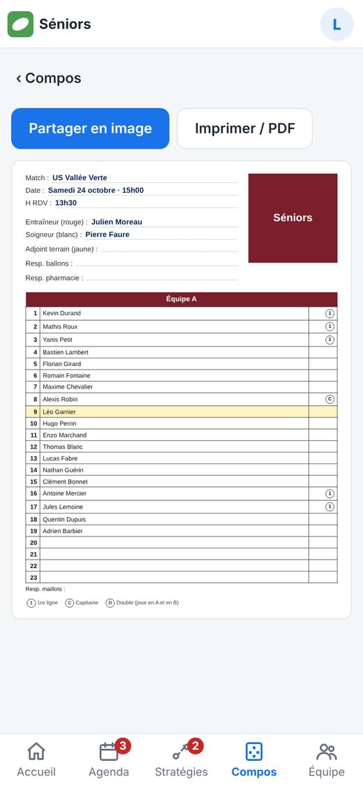
Compo publiée, côté joueur
Côté staff : la liste des compos
La page liste les 10 prochains matchs (non annulés), chacun avec son état :
À faire : aucune feuille commencée ;
Brouillon : feuille commencée, invisible des joueurs ;
Publiée : les joueurs la voient.
Pas de match ? Le bouton Aller à l’agenda permet d’en créer ou d’en importer. La feuille d’un match s’ouvre aussi depuis sa fiche dans l’agenda (Feuille de match).
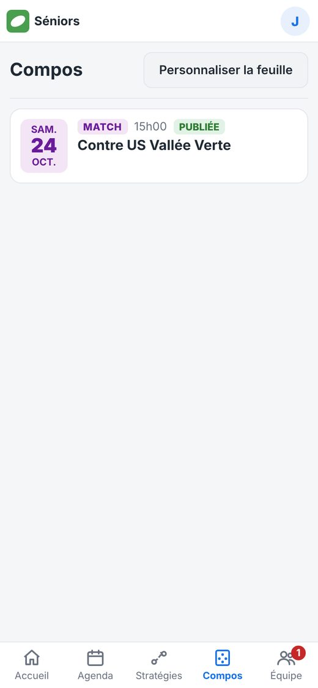
Liste des compos (staff)
Remplir la feuille de match
En-tête : « Match » (prérempli avec l’adversaire), « H RDV » (prérempli avec l’heure de rendez-vous) et les champs du club : Entraîneur (rouge), Soigneur (blanc), Adjoint terrain (jaune), Resp. ballons, Resp. pharmacie.
Dans chaque équipe de la feuille (Équipe A, Équipe B), touchez + Ajouter les présents (N) : les joueurs qui ont répondu Présent remplissent les lignes vides. Plus besoin de recopier les noms.
Ajustez ligne par ligne : chaque ligne propose les noms des convoqués. Les lignes 1 à 15 sont les titulaires ; à partir de la 16e, les remplaçants.
Ajoutez les repères à côté des noms : 1 (1re ligne), C (capitaine). D (double : joue en A et en B) se coche tout seul quand un joueur est dans les deux équipes.
Remplissez « Resp. maillots » en bas de chaque équipe, et Infos pour les joueurs (tenue, covoiturage, consignes).
Tout est enregistré automatiquement (« Brouillon enregistré ✓ »). Un même joueur ne peut pas figurer deux fois dans la même équipe.
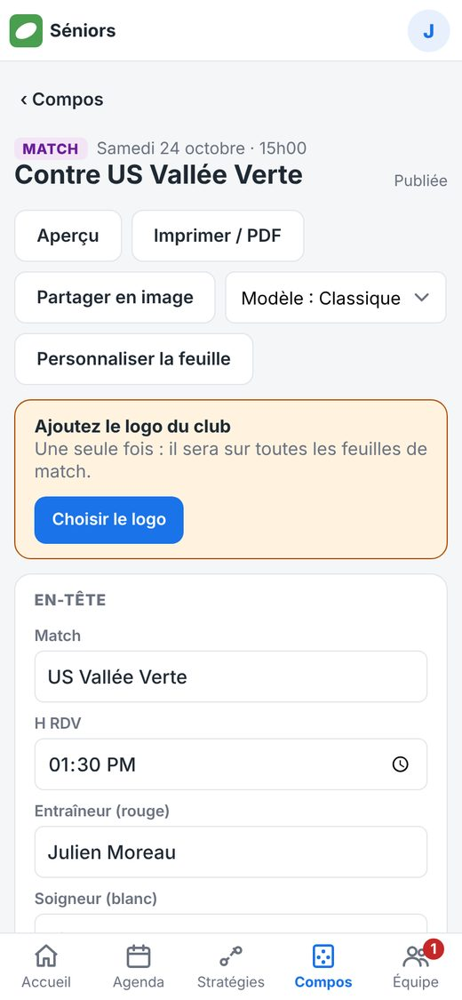
Feuille de match (staff)
Publier, imprimer, partager
Publier la compo aux joueurs : les joueurs voient la feuille, leur ligne en surbrillance, et reçoivent une notification. Après une modification : Republier et prévenir à nouveau.
Retirer la publication : la feuille redevient un brouillon.
Aperçu : la feuille telle qu’elle sera imprimée.
Imprimer / PDF : à imprimer pour l’arbitre ou à garder en PDF.
Partager en image : une image à envoyer sur WhatsApp (par le partage du téléphone, sinon téléchargée).
La liste Modèle (Classique, Moderne, Terrain) change la présentation pour toute l’équipe.
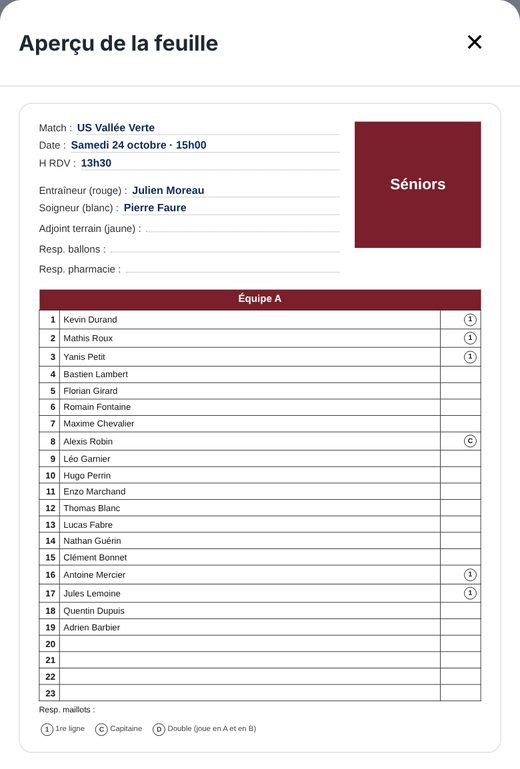
Aperçu de la feuille (modèle Classique)
Personnaliser la feuille de match
Personnaliser la feuille (depuis Compos, ou Équipe → Réglages) :
Modèle : Classique (comme la feuille papier : champs en haut, logo, équipes côte à côte), Moderne (bandeau aux couleurs du club, numéros en pastilles), Terrain (les 15 placés sur un terrain, remplaçants en dessous : idéal pour WhatsApp).
Logo et couleurs : Ajouter le logo, Couleur principale, Texte sur la couleur. Le logo apparaît aussi en haut de l’appli pour cette équipe. Une case permet de mettre ce logo et ces couleurs sur vos autres équipes.
Champs en haut de la feuille : renommez, retirez (✕) ou + Ajouter.
Équipes sur la feuille : nom et nombre de lignes (15 à 30), jusqu’à 3 équipes.
Champs en bas de chaque équipe et Repères à côté des noms (jusqu’à 6, code de 2 caractères et signification).
Case Afficher les postes dans le modèle Moderne.
Terminez par Enregistrer pour toute l’équipe.
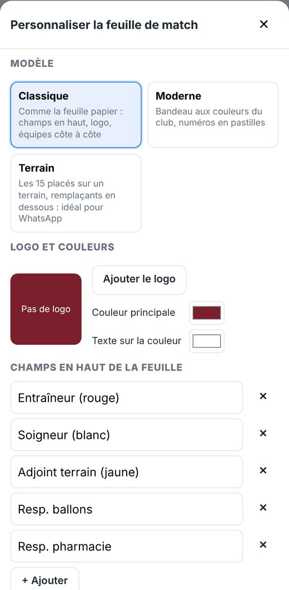
Personnaliser la feuille
8L’équipe et le club
La page Équipe a trois onglets : Membres, Réglages (staff) et Club.
Les membres
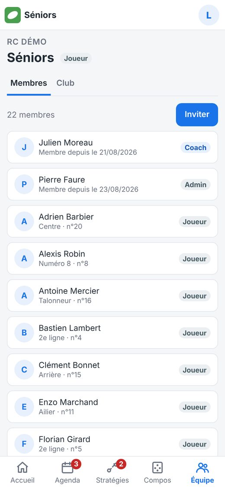
Membres (joueur)
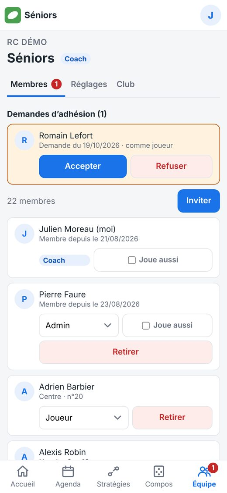
Membres (staff)
Tout le monde voit la liste des membres (photo, nom, postes, numéro). Toucher une ligne ouvre la fiche du membre : présentation, pied fort, taille, poids. Le staff y voit aussi les infos privées (téléphone, date de naissance, contact d’urgence).
Un joueur peut Quitter « l’équipe » : il reste membre du club.
Le staff, pour chaque autre membre :
change son rôle : Joueur, Coach ou Admin ;
coche Joue aussi pour un coach ou un admin convoqué comme un joueur ;
le Retirer de l’équipe.
Valider les demandes d’adhésion
Quand quelqu’un demande à rejoindre l’équipe, le staff et le bureau reçoivent une notification, et une pastille apparaît sur Équipe. En haut de l’onglet Membres, Demandes d’adhésion liste chaque demande (« comme joueur » ou « comme coach / encadrant ») :
Accepter : la personne entre dans l’équipe (avec le rôle Coach si elle l’a demandé) et reçoit la notification « Bienvenue » ;
Refuser : la demande est supprimée.
Inviter des joueurs
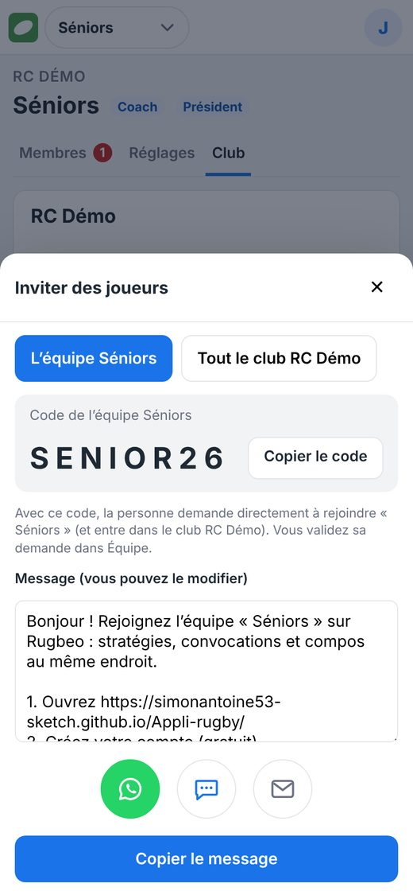
Code de l’équipe
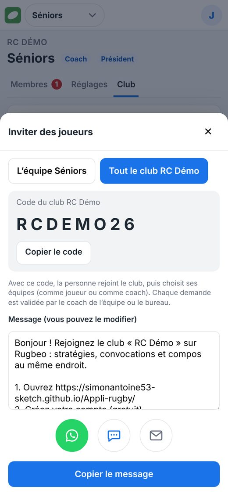
Code du club (bureau)
Le bouton Inviter (page Équipe ou tuile de l’accueil) est accessible à tous les membres.
Le bureau choisit entre L’équipe … (la personne demande à rejoindre cette équipe) et Tout le club … (elle rejoint le club puis choisit ses équipes).
Le code s’affiche en grand, avec Copier le code.
Le message est déjà rédigé (adresse de l’appli, création du compte, code) ; vous pouvez le modifier.
Envoyez-le par WhatsApp, SMS, e-mail ou une autre application, ou Copier le message.
Les réglages de l’équipe (staff)
L’équipe : renommer l’équipe.
Code de l’équipe : le code, Inviter, et Nouveau code (l’ancien ne marchera plus : utile si le code a trop circulé).
Partage des stratégies : le mode par défaut des nouvelles stratégies : Dans l’appli seulement, Téléchargeable ou Partage libre. Modifiable ensuite stratégie par stratégie.
Feuille de match : Personnaliser la feuille.
Mon appartenance : votre rôle, et Quitter l’équipe.
Zone sensible (bureau du club seulement) : Supprimer l’équipe, ses membres et ses stratégies publiées. Irréversible.
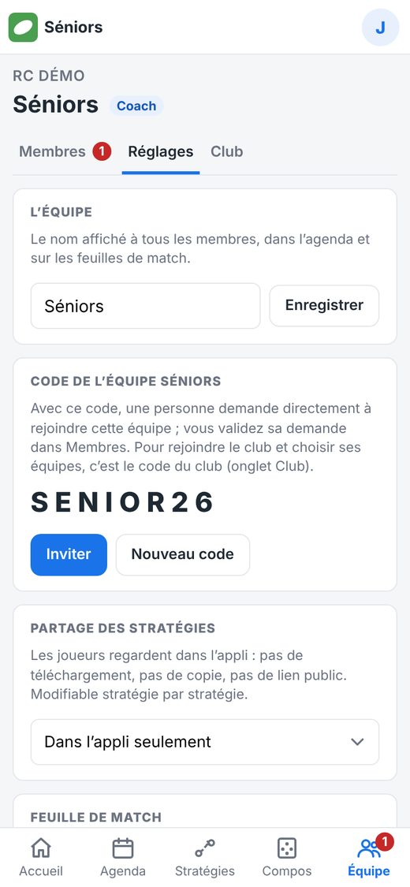
Réglages de l’équipe
L’onglet Club et le bureau
Tout le monde y voit le club, son bureau (« Bureau du club : noms (fonction) ») et la liste de ses équipes. Pour chaque équipe : Ouvrir si vous y avez accès, ou Demander à rejoindre (Comme joueur ou Comme coach / encadrant).
Le bureau du club a en plus :
le code du club (Copier, Nouveau code) ;
le mois de début de saison et Renommer le club ;
+ Créer une équipe (puis y ajouter un coach depuis sa page Membres) ;
le nombre de membres et de demandes de chaque équipe ;
la liste des membres du club, avec leur Fonction au club : Membre, Président, Présidente, Vice-président(e), Secrétaire, Trésorier, Trésorière, Membre du bureau ;
Retirer du club (la personne quitte aussi toutes les équipes du club).
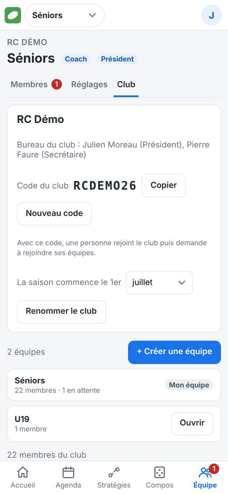
Onglet Club (bureau)
Nommer le bureauToute fonction autre que « Membre » donne la gestion de toutes les équipes du club, avec les droits d’un coach, même sans en être membre. Dans le sélecteur d’équipe, ces équipes portent la mention « · bureau ». Pour nommer la présidente : onglet Club → Membres du club → sa ligne → Fonction au club → « Présidente ».
9Votre compte
Touchez votre photo ou votre initiale en haut à droite. La page est rangée en quatre groupes : Moi, Réglages, Aide, Compte.
Moi
Votre photo, votre nom, votre e-mail, vos équipes et vos fonctions au club.
Modifier mon profil (ci-dessous).
Rejoindre ou créer un club, une équipe : entrer un nouveau code, créer une équipe (bureau) ou un club.
Réglages
Activer les notifications / Désactiver les notifications pour cet appareil. Si le navigateur les bloque, autorisez-les dans les réglages du site. Sur iPhone, installez d’abord l’appli sur l’écran d’accueil.
Cookies et mesure d’usage : rouvre le choix « Vos données, votre choix ». Rugbeo n’utilise ni cookie publicitaire ni publicité ; vous pouvez accepter ou refuser la mesure d’usage. Le choix est gardé 13 mois.
Aide
Revoir le tutoriel.
Signaler un bug ou proposer une idée (voir ci-dessous).
Confidentialité et conditions : quatre onglets, Confidentialité, Cookies, Conditions, Mentions légales.
Compte
Se déconnecter.
Supprimer mon compte (voir ci-dessous).
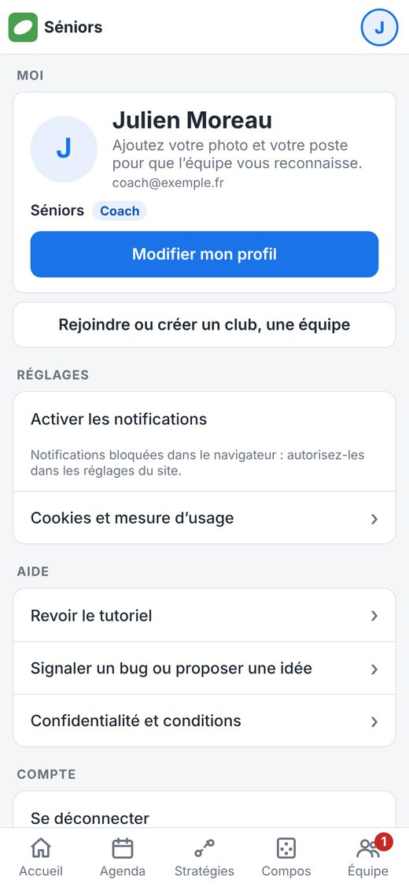
Page Compte
Votre profil
Photo : Ajouter une photo. Elle est recadrée automatiquement en carré.
Nom affiché (prénom et nom) : c’est ce que voient l’équipe et les feuilles de match.
Postes : 4 au plus (Pilier, Talonneur, 2e ligne, 3e ligne, Demi de mêlée, Demi d’ouverture, Centre, Ailier, Arrière).
Infos privées : téléphone, date de naissance, contact d’urgence et son téléphone. Elles ne sont visibles que par vous et le staff de votre équipe (et le bureau du club) : utile en cas de blessure.
Terminez par Enregistrer mon profil. Tout est facultatif.
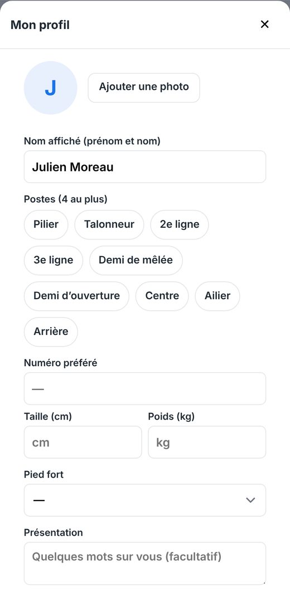
Mon profil
Signaler un bug, proposer une idée
Choisissez Un bug, Une idée ou Autre, décrivez en quelques mots, puis Envoyer. La page, l’appareil et la version de l’appli sont joints automatiquement.
La liste Mes avis envoyés montre où en est chaque avis : Nouveau, Vu, Prévu, Fait ou Écarté, avec la réponse éventuelle.
Supprimer votre compte
Supprimer mon compte → Continuer.
Tapez SUPPRIMER pour confirmer.
La suppression est définitive. Si vous êtes le seul coach d’une équipe, le membre le plus ancien devient coach. Si vous êtes seul dans l’équipe, elle est supprimée.
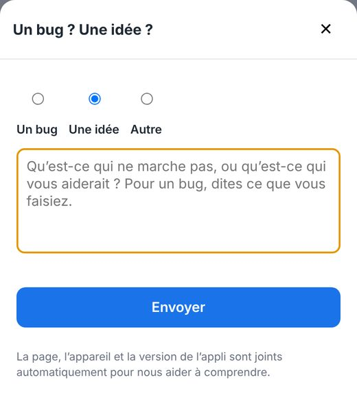
Un bug ? Une idée ?
Vos données
Les données sont hébergées en France (Paris), jamais revendues, et l’appli est sans publicité.
Le détail (quelles données, pourquoi, combien de temps, vos droits) est dans Confidentialité et conditions.
Une inscription non confirmée est effacée au bout de 24 h.
Si les conditions changent, une barre vous le signale à la connexion : lisez-les puis touchez J’ai compris.
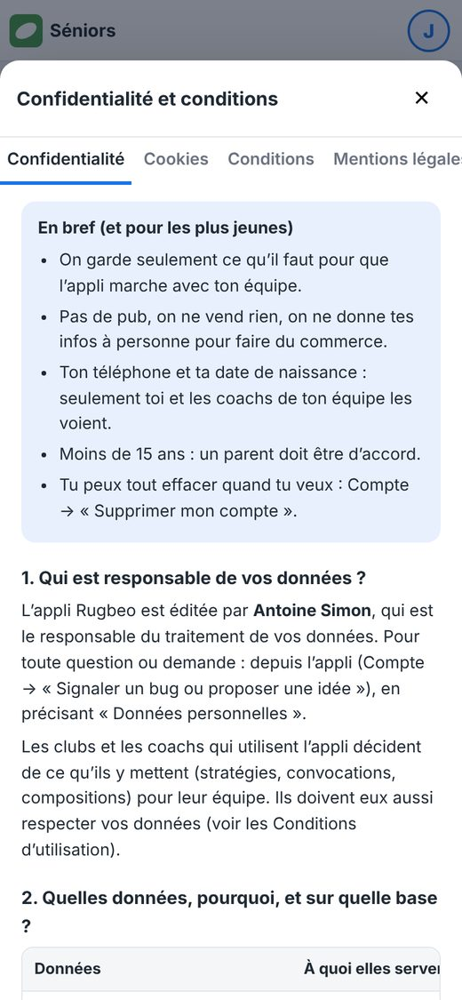
Confidentialité et conditions
10Les notifications
Une fois activées (Compte → Activer les notifications), elles arrivent sur le téléphone même quand l’appli est fermée. Toucher une notification ouvre directement la bonne page.
Notification
Qui la reçoit
Quand
Convocation
Les convoqués
Un événement est créé avec « Prévenir l’équipe » cochée (une seule pour un planning de saison).
Serez-vous là ?
Les convoqués sans réponse
Le staff touche « Relancer ».
Annulé
Tous les membres
Un événement isolé est annulé.
Compo publiée
Tous les membres
Le staff publie (ou republie) une compo.
Nouvelle stratégie
Tous les membres sauf l’auteur
Le coach publie une stratégie.
À regarder
Ceux qui n’ont pas ouvert la stratégie
Le staff relance depuis « Qui a vu ».
Proposition
Coachs et admins de l’équipe
Un joueur propose un dessin, ou une autre équipe du club envoie une copie.
Demande d’adhésion
Staff de l’équipe et bureau du club
Quelqu’un demande à rejoindre l’équipe.
Bienvenue
La personne acceptée
Sa demande est acceptée.
Rien ne s’envoiedans ces cas : import des matchs depuis un fichier .ics, modification d’un événement, annulation de plusieurs séances d’un planning, rétablissement, suppression. Prévenez alors l’équipe vous-même, par exemple avec « Copier pour WhatsApp ».
Un joueur ne reçoit rien ?Vérifiez avec lui : notifications activées dans Compte sur ce téléphone ; sur iPhone, appli ouverte depuis l’icône de l’écran d’accueil ; notifications du navigateur non bloquées dans les réglages du téléphone. Les relances indiquent sur combien de téléphones elles sont arrivées.
11Qui peut faire quoi
Action
Joueur
Admin
Coach
Bureau
Répondre aux convocations
✓
si « Joue aussi »
si « Joue aussi »
si « Joue aussi »
Voir la barre de présence d’un événement
✓
✓
✓
✓
Créer, modifier, annuler un événement, importer les matchs
–
✓
✓
✓
Voir qui vient en détail, répondre pour un joueur, relancer
–
✓
✓
✓
Dessiner et enregistrer ses dessins
✓
✓
✓
✓
Proposer un dessin au coach
✓
✓
–
–
Publier une stratégie, voir les Propositions
–
–
✓
✓
« Qui a vu », relancer une stratégie
–
✓
✓
✓
Commenter une stratégie publiée
✓
✓
✓
✓
Voir la compo publiée
✓
✓
✓
✓
Faire, publier, personnaliser la feuille de match
–
✓
✓
✓
Inviter (envoyer le code)
✓
✓
✓
✓
Valider les demandes, changer les rôles, retirer un membre
–
✓
✓
✓
Voir les infos privées des membres
–
✓
✓
✓
Réglages de l’équipe (nom, code, partage)
–
✓
✓
✓
Créer ou supprimer une équipe, code du club, nommer le bureau
–
–
–
✓
Gérer toutes les équipes du club
–
–
–
✓
« Bureau » = président(e), vice-président(e), secrétaire, trésorier(ère) ou membre du bureau, nommé dans l’onglet Club.
12Questions fréquentes
Je n’ai pas reçu l’e-mail de confirmation.
Regardez dans les spams, puis touchez Renvoyer l’e-mail. Vérifiez l’adresse (sinon Changer d’adresse e-mail). Si l’appli indique une limite d’envoi atteinte, réessayez une heure plus tard.
Mon code d’invitation ne marche pas.
Le code a sans doute été renouvelé : demandez le code actuel à votre coach ou au bureau.
J’ai rejoint le club, mais je ne vois aucune équipe.
Votre demande attend la validation d’un coach ou du bureau. Vous pouvez aussi choisir vos équipes depuis l’onglet Club (Demander à rejoindre).
Je suis dans plusieurs équipes : comment passer de l’une à l’autre ?
Avec la liste en haut à gauche, à côté du logo. Toutes les pages (agenda, stratégies, compos) affichent l’équipe choisie.
Je ne vois pas l’onglet Compos.
Pour un joueur, il apparaît dès que le staff publie une première compo.
Je suis coach et je joue aussi : je ne suis pas convoqué.
Dans Équipe → Membres, cochez Joue aussi sur votre ligne.
J’ai dessiné une stratégie sur l’ordinateur, je ne la retrouve pas sur le téléphone.
Elle n’a probablement pas été enregistrée : rouvrez l’éditeur sur l’ordinateur (le dessin en cours y est gardé) et touchez Enregistrer le dessin.
Un joueur ne peut pas télécharger une stratégie.
Elle est en mode « Dans l’appli seulement ». Ouvrez ⋯ → Partager… et activez Téléchargement.
Comment envoyer une stratégie à quelqu’un qui n’a pas de compte ?
Activez le Lien public dans Partager…, puis Copier le lien. Ou exportez-la en GIF ou en vidéo.
Un match du calendrier fédéral a changé de date.
Retéléchargez le fichier .ics dans Mon Club House et réimportez-le : le match est mis à jour, sans doublon.
L’appli fonctionne-t-elle sans connexion internet ?
Non : il faut une connexion pour charger et enregistrer les données.
Faut-il mettre l’appli à jour ?
Non, elle se met à jour toute seule.
Un problème, une idée ?
Compte → Signaler un bug ou proposer une idée. Chaque avis est lu, et vous suivez sa réponse dans « Mes avis envoyés ».
De la convoc’ au maillot, Rugbeo. simonantoine53-sketch.github.io/Appli-rugby